Introduction to Global Health Data Science
Duke University
STA/GLHLTH 198 Fall 2026
2026-10-19
Artisinal and small-scale gold mining is largest source of mercury pollution worldwide.
Are mercury concentrations in hair related to community of residence?
One way to explore this relationship is through a linear regression model, with dummy or indicator variables for community as predictors.
# A tibble: 23 × 5
term estimate std.error statistic p.value
<chr> <dbl> <dbl> <dbl> <dbl>
1 (Intercept) 0.614 0.0644 9.54 3.55e-21
2 communityBoca Isiriwe 1.20 0.159 7.56 5.77e-14
3 communityBoca Manu 0.833 0.129 6.43 1.56e-10
4 communityCaychihue -1.10 0.132 -8.36 1.09e-16
5 communityChoque -0.778 0.117 -6.68 3.04e-11
6 communityDiamante 1.06 0.109 9.67 1.00e-21
7 communityHuepetuhe -0.694 0.0732 -9.48 5.96e-21
8 communityIsla de los Va… 1.12 0.245 4.57 5.18e- 6
9 communityMasenawa 1.20 0.401 3.00 2.74e- 3
10 communityPalotoa Teparo 0.350 0.148 2.36 1.82e- 2
11 communityPuerto Azul 1.22 0.230 5.27 1.45e- 7
12 communityPuerto Luz 0.494 0.0991 4.98 6.67e- 7
13 communityPunquiri -0.678 0.176 -3.84 1.26e- 4
14 communityPuquiri 0.0842 0.192 0.439 6.61e- 1
15 communityQuebrada Neuva -0.812 0.0966 -8.41 7.21e-17
16 communityQueros -0.707 0.245 -2.89 3.93e- 3
17 communityQuimiri -0.621 0.274 -2.26 2.38e- 2
18 communityQuincemil -0.822 0.0858 -9.57 2.55e-21
19 communitySalvacion -0.732 0.0850 -8.61 1.31e-17
20 communitySan Lorenzo -0.245 0.124 -1.98 4.82e- 2
21 communitySetapo 0.517 0.319 1.62 1.05e- 1
22 communityShintuya 0.130 0.122 1.07 2.86e- 1
23 communityShipitiari 0.532 0.161 3.30 9.65e- 4When the categorical explanatory variable has many levels, they’re encoded to indicator or dummy variables
Each coefficient describes the expected difference between hair mercury levels in that particular community compared to the baseline level
Here, the community mean hair mercury levels are different from those in Boca Colorado (the referent group, selected alphabetically) with the exception of Puquiri, Setapo, and Shintuya.
What if we want to make comparisons between pairs of communities that don’t involve Boca Colorado? We’ll address that shortly!
When our predictor variable is categorical and the response is (approximately) normal (perhaps after transformation), often this type of model is fitted as an ANOVA model. ANOVA or Analysis of Variance refers to an approach when we have all categorical predictors, in which the hypothesis of interest is related to the degree of variability in the means across groups (versus within-group variability).
We can think of ANOVA as a special case of regression, when all predictors are categorical. Technically, ANOVA is more of a tool to break apart different sources of variation in data.
First, let’s explore hair Hg levels (in log ppm) by community in our data visually.
We might be interested in testing whether all the community means are the same or not.
\[H_0: \mu_{Boca Col}=\mu_{Boca Isi}=\cdots=\mu_{Shipitiari}\]
versus the alternative hypothesis that at least one of the community means is different.
One way to do this would be to use t-tests on all possible pairs of communities. In this case, with 23 communities we would need to do \(\begin{pmatrix} 23 \\ 2 \end{pmatrix}=253\) tests! In addition to being time-consuming, carrying out multiple tests typically leads to an inflated type I error rate.
Suppose all means are truly equal, and we conduct all 253 pairwise tests
Suppose also the tests are independent and done at a 0.05 significance level
Then the probability we fail to reject all 253 tests (the right decision) is \((1-0.05)^{253}=0.95^{253} \approx 0\), and the probability of rejecting at least one of the 253 null hypotheses, called the family-wise error rate, is \(\approx 1 >>0.05\)
In reality, this is a little more complicated (tests are not independent), but we still have the problem of an inflated type I error rate.
ANOVA extends the t-test and is one way to control the overall type I error rate at a fixed level \(\alpha\), if we only test pairwise differences when the chunk or overall test is rejected
In ANOVA, we typically follow this testing procedure.
First, you conduct an overall or chunk test of the null hypothesis that the means of all of the groups are equal.
If you reject this null hypothesis, then we usually step down to see which means are different from each other. A multiple comparisons correction is sometimes used for these pairwise comparisons of means.
If you do not reject the null hypothesis, this means our data are consistent with a population in which the means are all equal. Generally, no further testing should be done.
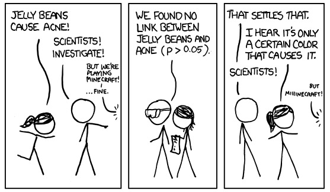
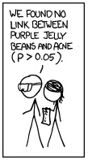
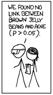
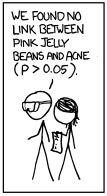
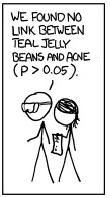
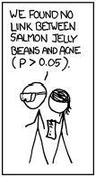
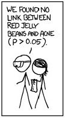
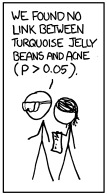
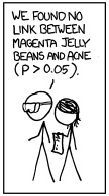
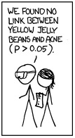
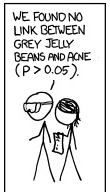
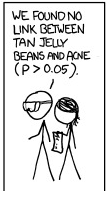
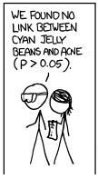
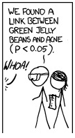
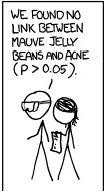
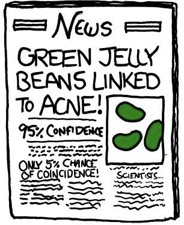
Disclaimer: So, uh, we did the green study again and got no link. It was probably a – “RESEARCH CONFLICTED ON GREEN JELLY BEAN-ACNE LINK; MORE STUDY RECOMMENDED!” headline.
Later, we’ll learn how to control type I error rate for many comparisons.
ANOVA stands for analysis of variance.
What does variance have to do with our null hypothesis, which is about equality of means, say \(H_0: \mu_1=\mu_2=\cdots=\mu_K\) for K means?
\(H_0: \mu_1=\mu_2=\cdots=\mu_K\)
\(H_A:\) at least one of the means is different
Let the response of subject \(j\) in group \(i\) be given by \(y_{ij}\), \(i=1,2,\ldots,K\), \(j=1,\ldots,n_i\)
\(K\) is the number of groups
\(n_i\) is the number of subjects in group \(i\)
ANOVA model is \[y_{ij}=\mu_i+\varepsilon_{ij}\] where we assume the \(\varepsilon_{ij}\) are independent and normally distributed with mean 0 and variance \(\sigma^2\).
\(\varepsilon_{ij}\) represent random error about each group mean, \(\mu_i\)
Model assumes the \(y_{ij}\) are independent and normally distributed with mean \(\mu_i\) and variance \(\sigma^2\)
Sometimes you see the model broken out with \(\mu_i=\mu+\alpha_i\), where \(\mu\) represents the overall or grand mean and \(\alpha_i\) represents each group’s deviation from the overall mean
Alternatively reference cell coding, like we used when fitting the regression model, could be used, where one group is the referent group and the other coefficients represent differences between each group and the referent group
Outcomes within groups are normally distributed
Homoscedastic variance (same variance of individual observations in each group)
Samples are independent
Normality: nothing looks terribly non-normal on the log scale, though some communities have relatively few measures
Equal variances: more or less ok on the log scale
Independence: this is an issue with these data, as some households provided multiple hair samples, and individuals within households may share exposure sources (e.g., meals), leading to correlated data within household. We will address this issue shortly.
Let the hair mercury of subject \(j\) in community \(i\) be given by \(y_{ij}\), \(i=1,2,\ldots, 23\), \(j=1,\ldots,n_i\)
We have 23 communities with \(n_i\) subjects in each
For each community, calculate the sample mean and variance, so now we have \(\bar{y}_1\) and \({s_1}^2\), \(\bar{y}_2\) and \({s_2}^2\), and so on \(\bar{y}_i\) and \({s_i}^2\) \(i=1,\ldots,23\)
ANOVA is concerned with two different types of variances:
Within-groups variance: variance of the individual observations around their respective community means
Between-groups variance: variance of the community means around the overall mean of all observations, \(\bar{y}_\cdot\)
Variance of \(y\) is estimated as \[s^2=\frac{\sum_{i=1}^K \sum_{j=1}^{n_i} (y_{ij}-\bar{y})^2}{n-1},\] where \(n=\sum_{i=1}^K n_i\) is the total sample size across all communities
Each community’s variance \[{s}^2_i=\frac{\sum_{j=1}^{n_i} (y_{ij}-\overline{y}_i)^2}{n_i-1}\] is a measure of the variance of the individuals around that community mean. To get a pooled estimate of the common variance of individuals around their community means, we can calculate \[{s_W}^2=\frac{(n_1-1){s_1}^2 + (n_2-1){s_2}^2 + \cdots + (n_K-1){s_K}^2}{n - K},\] where \(K\) is the number of groups and \(n=n_1+n_2+\cdots+n_K\). We can think of the within-groups variance as the inherent variability in the population.
The between groups variance is estimated by \[s_B^2=\frac{n_1(\bar{y}_1-\bar{y}_\cdot)^2+n_2(\bar{y}_2-\bar{y}_\cdot)^2 + \cdots + n_K(\bar{y}_K-\bar{y}_\cdot)^2}{K-1}.\]
We can think of the between-groups variance as the sum of inherent variability and any kind of systematic variability due to the group/community effect.
Both \({s_W}^2\) and \({s_B}^2\) are estimates of the population variance \(\sigma^2\) if \(H_0\) is true. Now, if the sample means vary around the overall mean (this variance measured by \({s_B}^2\)) more than the individual observations vary around the sample means (measured by \({s_W}^2\)), we have evidence that the corresponding group population means are in fact different (so that all \(K\) means are not the same).
How do we compare the variances? Consider \[F=\frac{\text{inherent variability + group effect}}{\text{inherent variability}}.\] If there is little to no group effect (no group effect implies \(H_0\) is true), this ratio will be very close to 1.
Thus the F statistic is given by \[F={s_B}^2/{s_W}^2,\] which if \(H_0\) is true has an \(F\) distribution with \(K-1\) and \(n-K\) df. The df associated with \({s_B}^2\) are called the numerator degrees of freedom and correspond to the total number of groups minus 1. The df associated with \({s_W}^2\) are called the denominator degrees of freedom and equal the total sample size minus the number of groups (we lose one df for each group mean we estimate). For ANOVA the test is inherently one-tailed, rejecting \(H_0\) only if \(F\) is considerably larger than one. (This does not mean we have a one-sided alternative; we just look at one tail of the F distribution to get the p-value, as the F statistic is never negative because variances cannot be negative.)
If there are only two groups, then the F test gives the same result as the t-test (with equal variances).
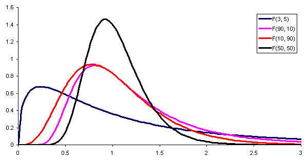
The numerator and denominator degrees of freedom (ndf and ddf) determine the cutpoint for a given \(\alpha\) level. The ndf is one less than the number of groups, and the ddf is the total number of observations minus the number of groups.
We can visualize the between and within groups variances, as well as how testing variances tells us about means, using this cool R Shiny app.
Df Sum Sq Mean Sq F value Pr(>F)
community 22 909.6 41.34 52.82 <2e-16 ***
Residuals 2285 1788.7 0.78
---
Signif. codes: 0 '***' 0.001 '**' 0.01 '*' 0.05 '.' 0.1 ' ' 1
1775 observations deleted due to missingnessHere’s the overall test of the null hypothesis that all 23 means are equal, versus the alternative that at least one mean is different. Based on that p-value, these data, or more extreme data, would be highly unlikely if the null hypothesis were true. Next, we probably wish to know which means are different!
# label: holm
# Holm's correction gives us good protection against type I errors
# under a wide variety of settings
hairpair <- pairwise.t.test(mercury$lhairHg, mercury$community, p.adj = "holm")
sigpairs <- broom::tidy(hairpair) %>%
filter(p.value<0.05) %>%
arrange(group1,group2)
nrow(sigpairs)[1] 138OK, that’s a lot of differences! More community pairs are different than not.
# A tibble: 138 × 3
group1 group2 p.value
<chr> <chr> <dbl>
1 Boca Isiriwe Boca Colorado 1.13e-11
2 Boca Manu Boca Colorado 2.82e- 8
3 Caychihue Boca Colorado 2.31e-14
4 Caychihue Boca Isiriwe 5.64e-32
5 Caychihue Boca Manu 5.52e-30
6 Choque Boca Colorado 5.56e- 9
7 Choque Boca Isiriwe 1.35e-26
8 Choque Boca Manu 2.18e-24
9 Diamante Boca Colorado 2.30e-19
10 Diamante Caychihue 1.68e-45
# ℹ 128 more rowsMost communities do differ in levels of hair mercury!
The data were analyzed using one-way ANOVA to test the overall hypothesis of no difference across communities, with planned step-down tests using a Holm correction for multiple comparisons when the overall hypothesis was rejected.
Using the overall F test (ndf=22, ddf=2285), a significant difference among the communities was identified (p<0.0001). Step-down tests indicated that mercury levels differed across the majority of pairwise community comparisons.
One challenge to the validity of this analysis is that multiple measures were obtained per household. If shared exposures or other factors induced positive correlations in mercury measures among household members, our standard errors would be too small, and our estimated significance levels would be anti-conservative.
As we showed earlier, conducting multiple tests on a data set increases the family-wise error rate. One very conservative way to ensure this is not the case is to divide \(\alpha\) by the number of tests to be done and to use that as the significance level. This procedure is called the Bonferroni correction. For example for two tests, to preserve an overall 0.05 type I error rate, the Bonferroni correction would use \(\frac{\alpha}{2}=0.025\) as the significance level for each individual test instead of \(0.05\). Bonferroni is a conservative multiple comparisons correction (like saving your money in your mattress!), making it harder to reject the null hypothesis, but it is a safe bet in controlling the type I error rate. A less conservative method that also offers strong control of the error rate is Holm’s method, which we used in our code.
The violation of the independence assumption due to the inclusion of multiple household members is indeed a concern. To explore this, let’s calculate the fraction of households (coded using hid) that provided hair measures from more than one household member.
# A tibble: 23 × 2
community avgct
<chr> <dbl>
1 Boca Colorado 0.794
2 Boca Isiriwe 0.973
3 Boca Manu 0.903
4 Caychihue 0.831
5 Choque 0.807
6 Diamante 0.842
7 Huepetuhe 0.842
8 Isla de los Valles 0.929
9 Masenawa 0.6
10 Palotoa Teparo 0.977
# ℹ 13 more rowsTypically, observations within a household are positively correlated (e.g., if one family member has a high level of hair mercury, another family member is more likely to have high hair mercury). Ignoring this type of positive correlation within household can lead to estimated standard errors (and thus p-values) that are too small when we’re estimating group means, invalidating our inferences.
The easiest solution to this problem is to limit the dataset to a single person per household. In this case, we’ll limit to the household member denoted withinid=1.
Df Sum Sq Mean Sq F value Pr(>F)
community 22 237.4 10.792 11.84 <2e-16 ***
Residuals 669 610.0 0.912
---
Signif. codes: 0 '***' 0.001 '**' 0.01 '*' 0.05 '.' 0.1 ' ' 1
434 observations deleted due to missingnessOur dataset is much smaller now, but we still see differences across communities and reject the overall test.
# A tibble: 55 × 3
group1 group2 p.value
<chr> <chr> <dbl>
1 Caychihue Boca Colorado 0.0210
2 Caychihue Boca Isiriwe 0.0000188
3 Caychihue Boca Manu 0.00279
4 Choque Boca Isiriwe 0.000240
5 Choque Boca Manu 0.0344
6 Diamante Boca Colorado 0.00478
7 Diamante Caychihue 0.0000000397
8 Diamante Choque 0.000000507
9 Huepetuhe Boca Colorado 0.000282
10 Huepetuhe Boca Isiriwe 0.0000169
# ℹ 45 more rowsNow just 55 community pair comparisons are different – still a marked difference across communities.
Another way to address multiple measures in each household is to add a random effect for household, to allow data from individuals within households to be positively correlated. This allows us to use all the data but controls for the within-household correlation that causes us to violate the independence assumption, replacing it with a conditional independence assumption: conditional on household, individuals are independent.
The random effect allows the model to capture correlation between residents of the same household.
NOTE: this discussion of random effects ANOVA is something you get for free with STA 198! I’m not going to expect you to fit these models, but I will expect you just to know that if you have correlated data, a random effects model is a good option!
library(lme4)
# need a factor version of hid
mercury <- mercury %>%
mutate(hhid=as.factor(hid))
m1=lmer(lhairHg ~ community + (1 | hhid), data = mercury)
anova(m1)Analysis of Variance Table
npar Sum Sq Mean Sq F value
community 22 258.74 11.761 28.853As you can see, the F statistic is markedly smaller after accounting for within-household correlation. R does not provide a p-value here, as testing in this setting is quite tricky. The story at the end of the day is the same – community matters. If you want to learn more about these models (also called multi-level or hierarchical models), we have more classes for you to do just that!
We can estimate the correlation, called the inter class correlation or ICC, as the ratio of the group variance to the total variance:
# Intraclass Correlation Coefficient
Adjusted ICC: 0.488
Unadjusted ICC: 0.331We interpret the ICC=0.49 as the correlation inside a household, or the fraction of variance explained by household membership. The correlation here is quite large. We should not be making any decisions based on the first analysis that included multiple individuals per household with no adjustment for correlated data (the analysis limiting to one person per household is still fine).
library(emmeans)
library(lmerTest)
library(pbkrtest)
paired <- m1 %>%
emmeans(pairwise~community)
paired$emmeans community emmean SE df lower.CL upper.CL
Boca Colorado 0.6170 0.0784 1103 0.4631 0.7708
Boca Isiriwe 1.7817 0.2120 805 1.3646 2.1988
Boca Manu 1.4431 0.1460 967 1.1569 1.7292
Caychihue -0.4783 0.1480 1014 -0.7694 -0.1872
Choque -0.1554 0.1260 1054 -0.4017 0.0909
Diamante 1.6189 0.1100 1040 1.4026 1.8352
Huepetuhe -0.0541 0.0450 1007 -0.1424 0.0342
Isla de los Valles 1.6244 0.3360 854 0.9656 2.2832
Masenawa 1.9044 0.4760 1199 0.9706 2.8382
Palotoa Teparo 0.9485 0.1770 895 0.6005 1.2964
Puerto Azul 1.7967 0.2860 925 1.2359 2.3576
Puerto Luz 1.1175 0.1140 791 0.8944 1.3406
Punquiri -0.0923 0.2090 1007 -0.5017 0.3171
Puquiri 0.5921 0.2380 1026 0.1253 1.0588
Quebrada Neuva -0.1655 0.0963 966 -0.3545 0.0234
Queros -0.1532 0.3110 925 -0.7634 0.4570
Quimiri 0.0981 0.3790 876 -0.6452 0.8415
Quincemil -0.1945 0.0746 995 -0.3408 -0.0482
Salvacion -0.1259 0.0727 963 -0.2685 0.0167
San Lorenzo 0.3246 0.1500 847 0.0308 0.6185
Setapo 1.1185 0.4440 916 0.2466 1.9905
Shintuya 0.7482 0.1370 933 0.4788 1.0177
Shipitiari 1.1867 0.1930 958 0.8085 1.5650
Degrees-of-freedom method: kenward-roger
Confidence level used: 0.95 Here we see estimated means by community.
To learn more about random effects models, also known as hierarchical or multilevel models, check out STA 210 or STA 221 (regression analysis) sometime!
# A tibble: 2,308 × 3
lhairHg assets_sc[,1] native_cat
<dbl> <dbl> <chr>
1 0.676 -0.837 Non-native
2 0.0908 0.197 Non-native
3 1.67 -0.280 Non-native
4 0.450 -0.280 Non-native
5 0.704 -0.280 Non-native
6 -0.512 -0.280 Non-native
7 -0.125 0.826 Non-native
8 -0.103 0.826 Non-native
9 0.351 -1.27 Non-native
10 0.0444 -1.27 Non-native
11 0.662 -0.359 Non-native
12 1.01 1.29 Non-native
13 -0.149 1.29 Non-native
14 0.881 0.517 Non-native
15 1.51 0.517 Non-native
16 0.328 -0.658 Non-native
17 0.0553 0.533 Non-native
18 0.768 1.29 Non-native
19 0.431 1.30 Non-native
20 1.55 1.30 Non-native
# ℹ 2,288 more rowsNative: community classified as native by Peruvian governmentNon-native: community does not have native classificationDefine \(\text{Non-native}_i\)=1 if non-native community and 0 otherwise.
\[\widehat{y_i} = 1.12 - 1.11~\text{Non-native}_i\]
Native) to the other level (Non-native)Non-native=0) are expected to have hair mercury exposures of 1.12 log ppm.com_fit <- linear_reg() %>%
set_engine("lm") %>%
fit(lhairHg ~ community, data = mercury)
tidy(com_fit)# A tibble: 23 × 5
term estimate std.error statistic p.value
<chr> <dbl> <dbl> <dbl> <dbl>
1 (Intercept) 0.614 0.0644 9.54 3.55e-21
2 communityBoca Isiriwe 1.20 0.159 7.56 5.77e-14
3 communityBoca Manu 0.833 0.129 6.43 1.56e-10
4 communityCaychihue -1.10 0.132 -8.36 1.09e-16
5 communityChoque -0.778 0.117 -6.68 3.04e-11
6 communityDiamante 1.06 0.109 9.67 1.00e-21
7 communityHuepetuhe -0.694 0.0732 -9.48 5.96e-21
8 communityIsla de los Va… 1.12 0.245 4.57 5.18e- 6
9 communityMasenawa 1.20 0.401 3.00 2.74e- 3
10 communityPalotoa Teparo 0.350 0.148 2.36 1.82e- 2
# ℹ 13 more rows# A tibble: 23 × 5
term estimate std.error statistic p.value
<chr> <dbl> <dbl> <dbl> <dbl>
1 (Intercept) 0.614 0.0644 9.54 3.55e-21
2 communityBoca Isiriwe 1.20 0.159 7.56 5.77e-14
3 communityBoca Manu 0.833 0.129 6.43 1.56e-10
4 communityCaychihue -1.10 0.132 -8.36 1.09e-16
5 communityChoque -0.778 0.117 -6.68 3.04e-11
6 communityDiamante 1.06 0.109 9.67 1.00e-21
7 communityHuepetuhe -0.694 0.0732 -9.48 5.96e-21
8 communityIsla de los Va… 1.12 0.245 4.57 5.18e- 6
9 communityMasenawa 1.20 0.401 3.00 2.74e- 3
10 communityPalotoa Teparo 0.350 0.148 2.36 1.82e- 2
11 communityPuerto Azul 1.22 0.230 5.27 1.45e- 7
12 communityPuerto Luz 0.494 0.0991 4.98 6.67e- 7
13 communityPunquiri -0.678 0.176 -3.84 1.26e- 4
14 communityPuquiri 0.0842 0.192 0.439 6.61e- 1
15 communityQuebrada Neuva -0.812 0.0966 -8.41 7.21e-17
16 communityQueros -0.707 0.245 -2.89 3.93e- 3
17 communityQuimiri -0.621 0.274 -2.26 2.38e- 2
18 communityQuincemil -0.822 0.0858 -9.57 2.55e-21
19 communitySalvacion -0.732 0.0850 -8.61 1.31e-17
20 communitySan Lorenzo -0.245 0.124 -1.98 4.82e- 2
21 communitySetapo 0.517 0.319 1.62 1.05e- 1
22 communityShintuya 0.130 0.122 1.07 2.86e- 1
23 communityShipitiari 0.532 0.161 3.30 9.65e- 4| community | BI | BM | Cay | Cho | Dia | Hue | Isl | Mas |
|---|---|---|---|---|---|---|---|---|
| Boca Colorado | 0 | 0 | 0 | 0 | 0 | 0 | 0 | 0 |
| Boca Isiriwe | 1 | 0 | 0 | 0 | 0 | 0 | 0 | 0 |
| Boca Manu | 0 | 1 | 0 | 0 | 0 | 0 | 0 | 0 |
| Caychihue | 0 | 0 | 1 | 0 | 0 | 0 | 0 | 0 |
| Choque | 0 | 0 | 0 | 1 | 0 | 0 | 0 | 0 |
| Diamante | 0 | 0 | 0 | 0 | 1 | 0 | 0 | 0 |
| Huepetuhe | 0 | 0 | 0 | 0 | 0 | 1 | 0 | 0 |
| Isla de los Valles | 0 | 0 | 0 | 0 | 0 | 0 | 1 | 0 |
| Masenawa | 0 | 0 | 0 | 0 | 0 | 0 | 0 | 1 |
etc. for the other communities. Note Boca Colorado, the referent community, =0 for all vars. This is closely related to one-hot encoding.
# A tibble: 23 × 5
term estimate std.error statistic p.value
<chr> <dbl> <dbl> <dbl> <dbl>
1 (Intercept) 0.614 0.0644 9.54 3.55e-21
2 communityBoca Isiriwe 1.20 0.159 7.56 5.77e-14
3 communityBoca Manu 0.833 0.129 6.43 1.56e-10
4 communityCaychihue -1.10 0.132 -8.36 1.09e-16
5 communityChoque -0.778 0.117 -6.68 3.04e-11
6 communityDiamante 1.06 0.109 9.67 1.00e-21
7 communityHuepetuhe -0.694 0.0732 -9.48 5.96e-21
8 communityIsla de los Va… 1.12 0.245 4.57 5.18e- 6
9 communityMasenawa 1.20 0.401 3.00 2.74e- 3
10 communityPalotoa Teparo 0.350 0.148 2.36 1.82e- 2
11 communityPuerto Azul 1.22 0.230 5.27 1.45e- 7
12 communityPuerto Luz 0.494 0.0991 4.98 6.67e- 7
13 communityPunquiri -0.678 0.176 -3.84 1.26e- 4
14 communityPuquiri 0.0842 0.192 0.439 6.61e- 1
15 communityQuebrada Neuva -0.812 0.0966 -8.41 7.21e-17
16 communityQueros -0.707 0.245 -2.89 3.93e- 3
17 communityQuimiri -0.621 0.274 -2.26 2.38e- 2
18 communityQuincemil -0.822 0.0858 -9.57 2.55e-21
19 communitySalvacion -0.732 0.0850 -8.61 1.31e-17
20 communitySan Lorenzo -0.245 0.124 -1.98 4.82e- 2
21 communitySetapo 0.517 0.319 1.62 1.05e- 1
22 communityShintuya 0.130 0.122 1.07 2.86e- 1
23 communityShipitiari 0.532 0.161 3.30 9.65e- 4You might be wondering how this model differs from the ANOVA model we just presented when exploring how community is related to mercury levels. In fact, the two models are equivalent! In our ANOVA discussion, we specified our model as \[y_{ij}=\mu_i+\varepsilon_{ij}\] with a separate mean \(\mu_i\) for each community, \(\mu_1, \mu_2, \ldots, \mu_{23}\).
Here, we fit the same model with a slightly different coding scheme, where we define the regression model intercept \(\beta_0\) to be the mean for the reference community, Boca Colorado, and the regression model parameters \(\beta_1, \beta_2, \ldots, \beta_{22}\) each measure the difference in mercury levels between Boca Colorado and the community of interest.
Our model thus is \[y_i=\beta_0 + \beta_1\text{Boca Isiriwe}_i + \beta_2\text{Boca Manu}_i + \ldots + \beta_{22}\text{Shipitiari}_i + \varepsilon_i\] where \(\text{Boca Manu}_i\) is an indicator variable that takes value 1 if the measurement is from a resident of Boca Manu, and it takes value 0 otherwise.
The mean for each community is given below.
Boca Colorado: \(\beta_0\)
Boca Isiriwe: \(\beta_0+\beta_1\)
Boca Manu: \(\beta_0 + \beta_2\) … Shipitiari: \(\beta_0+\beta_{22}\)
In the ANOVA model, the Boca Colorado mean was \(\mu_1\), the Boca Isiriwe mean was \(\mu_2\), etc. There is a 1:1 correspondence between the parameters in the two formulations with \(\mu_1=\beta_0,\) \(\mu_2=\beta_0+\beta_1\), etc.
Here we can compare the F test from the regression model with that from ANOVA.
Regression:
ANOVA:
Df Sum Sq Mean Sq F value Pr(>F)
community 22 909.6 41.34 52.82 <2e-16 ***
Residuals 2285 1788.7 0.78
---
Signif. codes: 0 '***' 0.001 '**' 0.01 '*' 0.05 '.' 0.1 ' ' 1
1775 observations deleted due to missingnessWe get the same F statistic and degrees of freedom fitting the model using either parameterization!